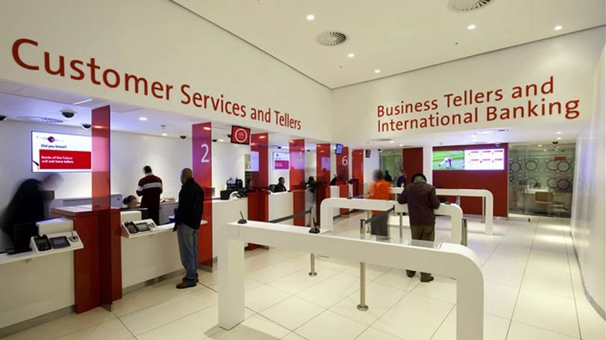

An aspiring data analyst with experience and skills in Python,
Tableau and Excel. Born in the Eastern Cape, I hold an MBChB and
just completed a BCom in Economics and Statistics degree.
This is a personal project using python to clean data. The dataset is movie data with features such as gross revenue, movie rating, actor and director names.
In this exploratory data analysis project I analyzed IPL match data from the 2022 IPL tournament. In this project we answer such questions as: Which team won the most number of matches? Which player has been awarded player of the match the most? Do captains prefer to bat or field first?

This project was undertaken as part of the Quantify Your Future (QYF) Virtual Internship. The QYF Virtual Internship, presented in partnership with Absa, First Rand, FNB, and Nedbank, provided interns with real world experience focusing on new and emerging careers in the data space. It was part of a broader project to understand customer sentiment around Absa’s brand positioning with regards to innovation. For this task we used the official Absa Twitter feed from which a sentiment analysis model and a text classification model were to be built.
For the feature extraction the focus was on the ‘extract’ column which contained the tweets. To analyse the sentiment, I first isolated tweets that contained the word ‘Absa’ and any other terms or phrases that may be related to the bank and its technological innovations such as cell phone and internet banking and their banking app, among others.
Data cleaning entailed removing duplicated rows and rows with null values. Hashtags, userhandles, links and other related features were removed using the ‘neattext.functions’ library.
I then created a tagger dictionary to characterize words in the tweets as either verbs, nouns, adjectives or adverbs using wordnet. I defined two functions; token_stop_pos() function to append words that are not stopwords to their respective tags as described by the tagger dictionary, and the lemmatize() function to obtain the base form meaning of words in the tweet. The lemmatize() function was called on the df[‘POS tagged’] column to get the base form meaning.
With the data ready for analysis, I rendered two wordcloud visualizations, the first was done to see what words not related to Absa were present in the data. After this visualization I removed these words from the dataset and ran the second wordcloud visualization which showed a more improved complement of words. Using TextBlob, I defined two functions to get the subjectivity and polarity of the tweets which were then stored in their respective columns. Tweets were classified as either positive, negative, or neutral and percentages of positive, negative and neutral tweets were computed. The sentiment of the tweets was visualised using a barplot and pie chart.
From the sentiment analysis we see that on average, only 21.1% of Absa clients who engage with, or posted about, Absa are happy with their innovations while a large proportion, 68.9%, is neutral.
Further insight can be obtained through intent analysis. This analysis can provide deep insights into customer requirements, particularly of those clients with a negative analysis on their tweet (which account for 10% of tweets), predict their next step and we can also determine whether the content was created as a complaint, spam or it was just a random tweet with no substantive intentions.

This project entails an analysis of business bank loans approved by a particular bank. Among the features in the dataset are approved amount and charge off (write off) amount, borrow state and the business state. The analysis can answer such questions as: Which state has the largest loan? The largest amount written off?
This project, presented by Nedbank, was part of the QYF Virtual Internship. The task was to develop a model to choose, from a dataset of clients, which clients would receive a payment holiday on their loans. I chose clients who had debt-income ratio no greater than 0.36
credit ratio of less than 640 and had never defaulted on their loans. The initial method was choose manually on an indiviudal basis where 50% of applicants were approved. With this model, costs to business went from R5 949 612,50 on the old process of approving 50% of applicants to R426 525 - a 92.8% reduction in costs.